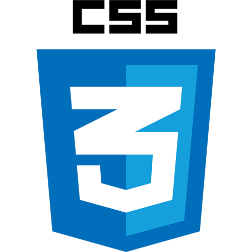

Conhecimentos fundamentais de HTML, CSS, JavaScript
HTML
HTML (HyperText Markup Language) é uma linguagem de marcação usada para estruturar e organizar o conteúdo de páginas web. Diferente de linguagens de programação, o HTML não executa lógica ou cálculos, mas define a estrutura e o significado dos elementos em uma página.
CSS, ou Folhas de Estilo em Cascata, é uma linguagem que permite estilizar elementos em uma página web. Com CSS, você pode definir propriedades como cores, tamanhos, fontes, espaçamentos, posicionamentos e muito mais.

JavaScript
JavaScript é uma linguagem de programação leve, interpretada e amplamente utilizada para criar interatividade em páginas web. Ele permite que desenvolvedores implementem funcionalidades dinâmicas, como atualizações automáticas de conteúdo, animações, controle de multimídia e muito mais. É uma das três tecnologias fundamentais da web, ao lado de HTML (estrutura) e CSS (estilo).
const para = document.querySelector("p");
para.addEventListener("click", atualizarNome);
function atualizarNome() {
const nome = prompt("Insira um novo nome:");
para.textContent = "Jogador 1: " + nome;
}